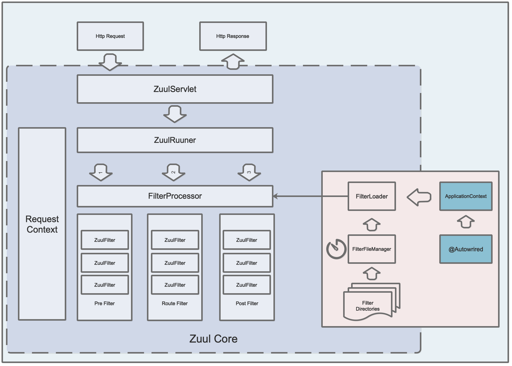

Zuul
整体架构

Zuul 的入口就是一个 ZuulServlet。
除了 ZuulServlet 之外，Zuul 还可以切换为 ZuulServletFilter 拦截，本质上就是 Servlet 和 Filter 的区别，从容器角度来看，Filter 是优先于 Servlet 的。
相关配置：zuul.use-filter = true
整个的执行流程如上图所示，从外到里分别是：
graph TD
ZuulServelt --> ZuulRunner --> FilterProcessor --> ZuulFilter
部分组件
RequestContext 是和请求上下文绑定的，使用的 ThreadLocal 实现。
ZuulRunner 是 Zuul 的执行器，但是主要逻辑还是调用 FilterProcessor 实现的。
FilterProcessor 是 ZuulFilter 的执行器。
FilterFileManager 会启动一个后台线程，定时轮询指定的文件，并在发生更新的时候尝试更新 Filter 类的缓存。
FilterRegistry 就是一个全局的 Filter 缓存，内部使用 ConcurrentHashMap 来保存已经加载的 Filter。
FilterLoader 是 Filter 总的管理类，负责从缓存中获取数据，并且还负责编译源代码文件。
ZuulFilter 继承 IZuulFilter 接口，是 Zuul 中最核心的组件，负责对请求的各周期处理（和 Servlet 体系中的 Filter 不同）
一个正常的 ZuulFilter 需要完整的实现以下四个方法：
| 方法名 | 作用 |
|---|---|
| filterType() | ZuulFilter 的执行点分为如下几种 : pre，route，post，error |
| filterOrder() | 过滤器的优先级 |
| shouldFilter() | 前置判断是否需要过滤 |
| run() | 真实的过滤器执行逻辑 |
无任何异常的情况下：pre -> route -> post
出现异常的情况下： pre -> error -> post，pre -> route -> error -> post，pre -> route -> post -> error
内置过滤器
| 过滤器名称 | 过滤器执行点 | 作用 |
|---|---|---|
| ServletDetectionFilter | pre | 判断请求是由 DispatcherServlet 转发还是 ZuulServlet 转发，并将结果保存在 RequestContext 中 |
| Servlet30WrapperFilter | pre | 包装原有的 HttpServletRequest |
| FormBodyWrapperFilter | pre | 处理 form 表单数据，并包装为 FormBodyRequestWrapper 对象 |
| DebugFilter | pre | |
| PreDecorationFilter | pre | 根据 ServiceId 和 forward.to ，使用 RouteLocator 判断请求的转发路径，为后续的转发打标记 |
| TracePreZuulFilter | pre | |
| SendForwardFilter | route | forward 请求转发，利用 ApplicationDispatcher 进行转发 |
| RibbonRoutingFilter | route | ServiceId 的转发 |
| SimpleHostRoutingFilter | route | URL 转发 |
| SendResponseFilter | post | |
| SendErrorFilter | error | 处理错误的请求 |
转发相关 Filter
RibbonRoutingFilter
该过滤器仅响应带有 ServiceId 的请求，并将该类请求转发到 ServiceId 代表的服务地址，服务地址基于 Ribbon 获取，请求基于 Hystrix 发送，所以可以配置基于 Ribbon 的重试以及负载均衡，也可配置基于 Hystrix 的隔离和熔断策略。
SimpleHostRoutingFilter
该过滤器仅响应带有 routeHost 参数（url 配置）的请求，并使用 HttpClient 对请求进行转发，因此没有 Hystrix 的保护。
SendForwardFilter
基于 RequestContext 中的 forward.to 进行服务的转发，基本上是本地的转发，例如直接转发到 DispatcherServlet。